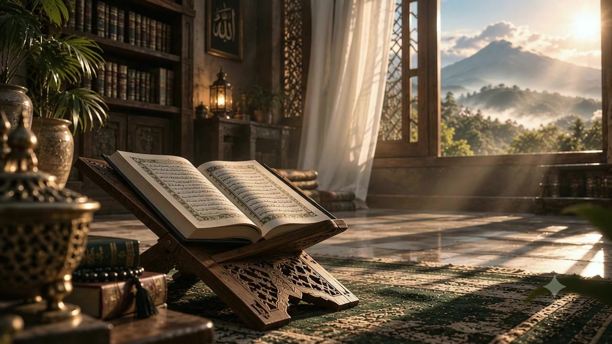

SEBUAH PERJALANAN MENUJU CAHAYA
PESANTREN TAHFIZH + MULTIMEDIA
Dari ruang mengaji,
menuju dunia.
Al-Qur’an sebagai fondasi.
Keterampilan sebagai jalan membawa kebaikan.

Dari ruang
mengaji.
Al-Qur’an menemani langkah pertama.
Ilmu memberi arah bagi perjalanan.
Berakar dalam ilmu.
Terbuka pada dunia.
Tumbuh dalam adab.
Pendidikan agama dan keterampilan modern. Bukan dua arah yang berbeda.
Di Assyabab, Dirasah Islamiyyah bertemu pendidikan modern berbasis multimedia. Santri belajar Al-Qur’an, mengembangkan Bahasa Arab, dan memanfaatkan teknologi untuk dakwah.
Didirikan pada 2020 oleh Ustadz Kasif Heer dan Ustadz Mohammad Muchsin, Assyabab tumbuh di atas tanah wakaf di Caringin, Bogor.
Empat jalan.
Satu cahaya.
Memperbaiki bacaan, menjaga hafalan, mengindahkan lantunan, dan memahami makna.
01Tahsin
Memperbaiki bacaan Al-Qur’an melalui pembelajaran yang terstruktur.
KITAB RUJUKANTuhfathul Athfal
02Tahfizh
Menghafal Al-Qur’an, menyetorkan hafalan, dan menjaganya melalui murajaah.
KITAB RUJUKANAt-Tibyan fii Adabi Hamalatil Quran
03Tanghim
Mempelajari seni melantunkan Al-Qur’an sebagai bagian dari program 4T.
KITAB RUJUKANIlmu Naghom Al-Quran
04Tafsir
Mendekat pada makna melalui pembelajaran tafsir Al-Qur’an.
KITAB RUJUKANTafsir Al-Muyassar atau Tafsir Jalalain

Ilmu yang tinggal
dalam kehidupan.
HALAQAH AL-QUR’AN · DOKUMENTASI ASSYABABDakwah tak berhenti
di mimbar.
Di depan kamera. Di balik layar. Santri belajar membuat video, menyunting, serta mengelola web dan media sosial untuk menyampaikan dakwah sesuai zaman.
Tonton cerita Assyabab ↗Buat ruang
bagi kebaikan.
Simulasi desain di browser. Tidak mengunggah data atau mengubah karya milik pesantren.
Hari berganti.
Makna menetap.
Memulai dengan
yang menguatkan.
Subuh berjamaah, dzikir, dan doa. Dilanjutkan setoran hafalan Al-Qur’an serta merawat kebersihan lingkungan.
Aktivitas mengikuti materi profil. Visual pergantian waktu adalah ilustrasi; bukan jadwal dengan jam pasti.
Ada ilmu.
Ada yang membimbing.
Bertemu para pengajar dan pendiri yang membawa pengalaman mereka ke dalam pendidikan Assyabab.
Ust. M. Riyadi
Lubis.
S.Q, S.Pd, M.Sc
Alumni Universitas PTIQ dan IIUI Pakistan.
Tempat belajar.
Tempat bertumbuh.
Kesempatan belajar
seharusnya lebih luas.
Materi profil Assyabab memuat akses pendidikan bagi anak dari berbagai latar ekonomi, termasuk pembebasan biaya pendidikan untuk yatim-piatu dan duafa. Ketentuan bantuan dikonfirmasi kepada pengelola.
Menjadi bagian dari kebaikan ↗Mungkin perjalanan
berikutnya adalah
milikmu.
Mari mengenal Assyabab lebih dekat.
Bicarakan perjalanan pendidikan putra Anda bersama pengelola.
Jenjang pendidikan & ijazah
Materi profil menyebut pendidikan setara SMP dan SMA serta ijazah sesuai standar nasional. Ketentuan penerimaan dan penyelenggaraan ijazah dikonfirmasi langsung kepada pengelola.
Biaya & bantuan pendidikan
Materi profil memuat pembebasan biaya pendidikan untuk yatim-piatu dan duafa. Untuk besaran biaya, syarat, kuota, dan ketentuan bantuan terbaru, hubungi pengelola.
Lokasi & waktu berkunjung
Jl. PDAM, Kampung Limusnunggal, Desa Ciherang Pondok, Kecamatan Caringin, Kabupaten Bogor, Jawa Barat. Permintaan kunjungan perlu mendapat konfirmasi pengelola sebelum Anda berangkat.